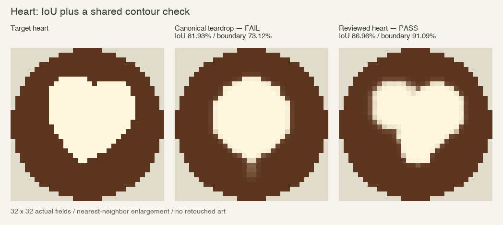
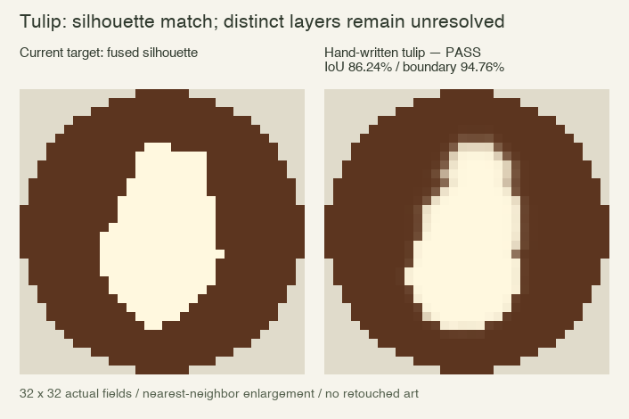
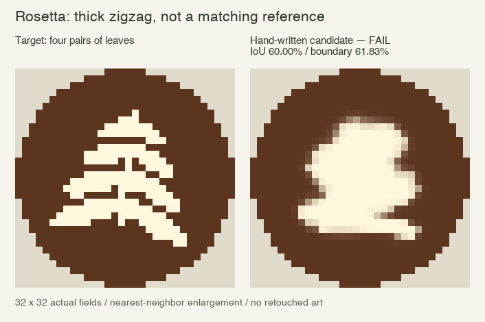
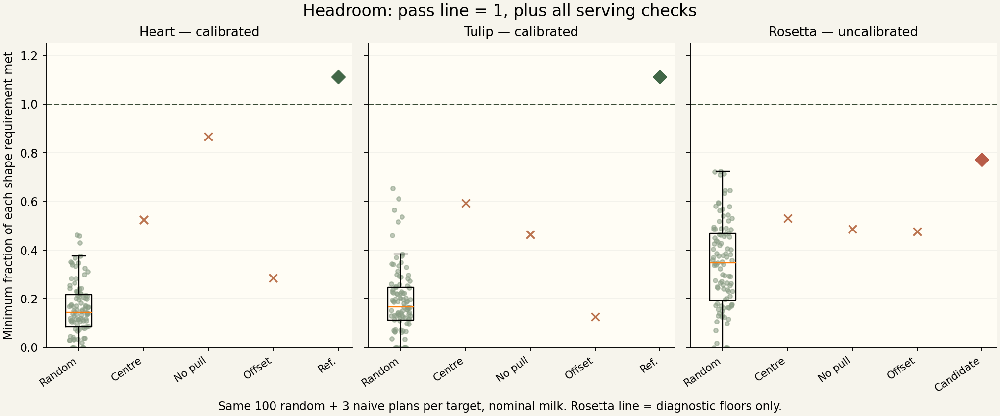

v0.5 · 32×32 · 33 parameters · nominal milk · target seed 42 · no paid models
The canonical teardrop fails the heart contour gate. The reviewed heart passes. A hand-written tulip matches the current fused target silhouette. Rosetta remains uncalibrated: the best tested recipe is a thick zigzag, not four leaf pairs.
| Pour | IoU | Boundary F1 | Foam precision | Quality | Verdict |
|---|---|---|---|---|---|
| heart | 86.96% | 91.09% | 94.83% | 86.96% | PASS |
| tulip | 86.24% | 94.76% | 92.16% | 86.24% | PASS |
| rosetta | 60.00% | 61.83% | 66.36% | 60.00% | FAIL / uncalibrated |
| canonical teardrop → heart | 81.93% | 73.12% | 96.23% | 73.12% | FAIL: contour |
Keep mask IoU (foam density ≥0.25). Extract the four-connected foreground outline of both masks. Boundary precision and recall count outline cells within one Euclidean grid cell of the other outline; boundary F1 is their harmonic mean. We also log mean symmetric Chamfer and Hausdorff distances. The rule has no shape IDs or privileged regions.
Displayed quality = 100 × min(IoU, boundary F1). Passing requires all three shape thresholds plus volume, temperature, spills, serving, time and scorching checks. Exact target masks score 100% IoU and boundary F1 for all three shapes. IoU translation/scale sanity curves pass. The one-cell contour tolerance is intentionally stricter and is not a smooth loss beyond its tolerance.


The tulip target merges overlapping primitives into a continuous silhouette. This reference matches that benchmark mask, but does not demonstrate three separated tulip layers. Stronger layered-art claims need a revised target and fresh calibration.

We tried 36 explicit tulip recipes and 30 explicit rosetta recipes, choosing the best by the shared shape quality. All use the same 33 bounds. This is local recipe selection, not a model or optimizer ablation. Six linear segments plus radial pool spreading produce connected ribbons and merge leaf gaps. None of the tested recipes formed the four leaf pairs and thin stem. This is a tested limitation, not a mathematical impossibility proof.
100 valid vectors sampled from 33 independent Uniform[0,1) coordinates with seed 20261020. The identical vectors and three fixed naive controls are scored per target. Every result is included; only 38/100 random pours meet the non-shape serving checks. Percentiles use linear interpolation. The pass-ratio plot includes precision as well as IoU and contour.

| Target | Random min / median / P95 / max quality | Max random requirement ratio | Max naive ratio | Reference ratio | Random / naive passes |
|---|---|---|---|---|---|
| heart | 0.00% / 11.62% / 28.95% / 37.97% | 0.463 | 0.866 | 1.111 | 0/100 · 0/3 |
| tulip | 0.00% / 14.12% / 39.47% / 54.37% | 0.654 | 0.592 | 1.111 | 0/100 · 0/3 |
| rosetta | 0.00% / 17.38% / 35.53% / 47.00% | 0.723 | 0.531 | 0.773 | 0/100 · 0/3 |
| Target | Control | IoU | Boundary F1 | Quality | Requirement ratio |
|---|---|---|---|---|---|
| heart | centre pour | 69.26% | 43.01% | 43.01% | 0.525 |
| heart | no pull-through | 81.05% | 70.97% | 70.97% | 0.866 |
| heart | off-centre (+0.35 x) | 45.05% | 23.40% | 23.40% | 0.285 |
| tulip | centre pour | 71.31% | 50.53% | 50.53% | 0.592 |
| tulip | no pull-through | 64.66% | 39.56% | 39.56% | 0.464 |
| tulip | off-centre (+0.35 x) | 33.87% | 10.87% | 10.87% | 0.127 |
| rosetta | centre pour | 55.06% | 42.50% | 42.50% | 0.531 |
| rosetta | no pull-through | 50.60% | 38.86% | 38.86% | 0.486 |
| rosetta | off-centre (+0.35 x) | 28.81% | 38.12% | 28.81% | 0.477 |
Extra control: removing only the reviewed heart's final pull still passes at 88.14% quality. The heart has already formed. The fixed naive “no pull” is the generic circle pour, not this stronger lobe-building reference. Passing measures the output, not proof of a specific barista technique.
Heart and current tulip have a measured gap from these controls. Rosetta has no accepted reference and therefore no established pass gap. These are nominal-milk diagnostics, not held-out robustness or learning results.
Thresholds = max(predeclared floors, 90% of the visually accepted reference metric), rounded down to four decimals. Floors are IoU 50%, precision 80%, boundary F1 80%. Thresholds were set before running the controls and were not tuned to their outcomes.
| Target | Min IoU | Min boundary F1 | Min precision | Status |
|---|---|---|---|---|
| heart | 78.26% | 81.98% | 85.34% | Calibrated |
| tulip | 77.61% | 85.28% | 82.94% | Calibrated |
| rosetta | 50.00% | 80.00% | 80.00% | Diagnostic floors only |
Heart and tulip reference replays pass. Rosetta's low candidate cannot lower the floors; its model run gates are blocked. Calibration performed three reference replays, with additional verification replays. The prior 1,001-evaluation physical search belongs to the old IoU-only scorer; it is not a new contour-scorer search.
Each plan has three high-fill parameters and six endpoints with x, z, height, tilt and duration. Controls interpolate at 60 Hz, then settle and serve. No mid-pour observations or model calls. Milk inputs remain volume and starting temperature only.
Visually reviewed 32x32 heart: two lobes, central notch, narrowing front. Explicit lobe placement is necessary in this stylized surface model; it is not validated barista physics. High fill: 150.0 ml cup target, 160.0 mm, 75.0° tilt.
| Segment | x | z | Height mm | Tilt ° | Duration s |
|---|---|---|---|---|---|
| 1 | -0.270 | -0.260 | 10.00 | 0.00 | 0.400 |
| 2 | -0.270 | -0.260 | 10.00 | 85.00 | 4.400 |
| 3 | 0.270 | -0.180 | 10.00 | 0.00 | 0.100 |
| 4 | 0.270 | -0.180 | 10.00 | 85.00 | 4.200 |
| 5 | 0.030 | 0.150 | 10.00 | 60.00 | 0.700 |
| 6 | 0.030 | 0.580 | 80.00 | 0.00 | 1.300 |
Three explicitly positioned pools match the current fused tulip silhouette. Its binary target already merges the layers; this is not a convincing layered real tulip. High fill: 180.0 ml cup target, 160.0 mm, 75.0° tilt.
| Segment | x | z | Height mm | Tilt ° | Duration s |
|---|---|---|---|---|---|
| 1 | 0.070 | -0.400 | 10.00 | 85.00 | 3.000 |
| 2 | 0.040 | -0.040 | 10.00 | 0.00 | 0.100 |
| 3 | 0.040 | -0.040 | 10.00 | 85.00 | 2.850 |
| 4 | -0.020 | 0.300 | 10.00 | 0.00 | 0.100 |
| 5 | -0.020 | 0.300 | 10.00 | 85.00 | 3.600 |
| 6 | -0.080 | 0.660 | 80.00 | 0.00 | 0.700 |
Best hand-designed zigzag candidate from 30 explicit recipes: missing four leaf pairs and the thin stem. Not accepted as a visible target match. High fill: 175.0 ml cup target, 160.0 mm, 75.0° tilt.
| Segment | x | z | Height mm | Tilt ° | Duration s |
|---|---|---|---|---|---|
| 1 | -0.130 | -0.420 | 10.00 | 60.00 | 1.000 |
| 2 | 0.250 | -0.320 | 10.00 | 60.00 | 1.000 |
| 3 | -0.320 | -0.120 | 10.00 | 60.00 | 1.000 |
| 4 | 0.400 | 0.080 | 10.00 | 60.00 | 1.000 |
| 5 | -0.500 | 0.310 | 10.00 | 60.00 | 1.000 |
| 6 | 0.480 | 0.480 | 10.00 | 60.00 | 1.000 |
Summary metrics · All plans, final foam fields, reference traces and scores
Reproduce from the repository: bun run calibrate, bun scripts/shape-headroom.js, uv run scripts/render-shape-audit.py. Regenerating designs is optional: run probe-shape-references.js once, then refine-shape-references.js once before calibration.